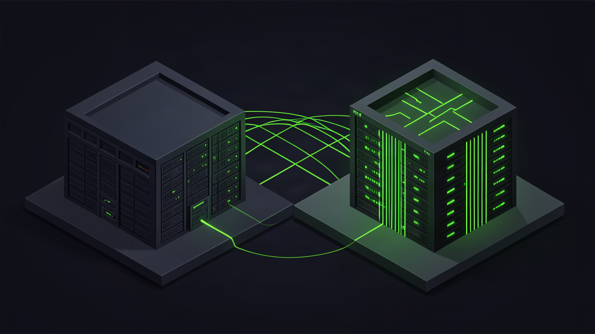

У многих разработчиков живет опасная иллюзия: если проект задеплоен в облако, о «железе» можно забыть. Мы привыкли думать, что надежность покупается автоматически вместе с оплатой виртуальных машин.
Утром 11 октября этот шаблон разбился о реальность. Около 04:12 мск в официальном канале оповещений платформы появилось сообщение о нарушении электропитания в зоне доступности ru-central1-a (дата-центр во Владимирской области).
Вскоре выяснилось: объект во Владимире полностью остановил работу после атаки БПЛА. Платформа перешла в аварийный режим, а клиентам рекомендовали «задействовать любые другие альтернативные планы по аварийному восстановлению».
Это не первый инцидент за неделю: в ночь на 8 октября пострадал объект в Сасове Рязанской области (работа остановлена), а утром 9 октября под удар попал дата-центр в Калуге, где часть инфраструктуры вышла из строя. Об этом выходило официальное сообщение Яндекса.
Физика блэкаута: почему облако не отменяет географию
Начнём с базы. За обозначением зоны ru-central1-a стоит конкретное здание из бетона, подстанций и кабелей.
Зона доступности (availability zone) — это изолированная площадка с независимым питанием и каналами связи. В теории она рассчитана на локальные сбои. Но прямое физическое разрушение перечеркивает любые инженерные дубли.
Логика простая: если площадка обесточена, все серверы, базы данных и диски внутри нее выключаются моментально. Облако не висит в воздухе — оно привязано к точке на карте.
Смотрите, как устроен типичный пет-проект: база данных, API и воркфлоу подняты в одной зоне, потому что так дешевле. Но когда рубильник падает, проект исчезает из сети.
Чек-лист устойчивости: 4 правила для боевого контура
Главный поинт, который стоит понять: отказоустойчивость — не свойство облака, а ответственность инженера. Ни один вендор не спасет сервис, если приложение собрано вокруг одной точки отказа.
Чтобы пережить потерю площадки, боевой контур должен опираться на четыре правила:
- Репликация минимум на две изолированные зоны. База данных обязана жить в кластере: мастер в одной зоне, реплика — во второй. При сбое failover переводит трафик на живой узел за секунды.
- Холодные бэкапы в независимом контуре. Холодный бэкап — регулярный снимок данных вне основного облака (на сервере другого хостинга или в S3). Если платформа объявляет режим аварии, архивы остаются доступны.
- Регулярные учения отказа руками. Самый полезный вопрос обычно задаёшь уже после аварии: а поднимется ли продакшен из архива? Проверять это нужно днем: погасите сервер руками и засеките время восстановления.
- Принцип нулевых иллюзий. Держать в голове одну мысль: если продакшен не готов к отключению дата-центра — у вас просто нет продакшена.

Грабли в агентных пайплайнах
Для тех, кто крутит агентные цепочки или оркестраторы в n8n, потеря площадки несет скрытый подвох.
Когда база данных уходит в офлайн, асинхронные скрипты сходят с ума. Агенты начинают бомбить упавшие эндпоинты ретраями, очереди сообщений переполняются, а баланс API-токенов сгорает впустую за считанные минуты.
В личном сетапе я держу жесткое правило: если сервис не отвечает три секунды, пайплайн уходит в аварийную паузу (circuit breaker) и сбрасывает стейт в журнал, а не плодит паразитные вызовы.
Разница не в таланте, а в системе. Если каждый воркер умеет спокойно пережидать отключение соседей, инфраструктура сохраняет управляемость.
Сухой остаток: прагматика вместо паники
Остановка дата-центра во Владимире — не повод для паники, а отрезвляющий сигнал для каждого, кто держит сервисы для пользователей.
То, что казалось параграфом из теоретических стандартов («сценарий гибели площадки»), стало обычной эксплуатационной реальностью.
Прагматика и ничего лишнего: потратьте день на разнос сервисов по зонам, настройте независимый бэкап и проверьте рубильник руками. Спокойный сон в продакшене стоит пары часов настройки.
А как устроена ваша инфраструктура: настраиваете репликацию между независимыми зонами доступности или держите сервисы на одной площадке? Напишите в комментариях, приходилось ли вам поднимать базы данных после падения хостинга.